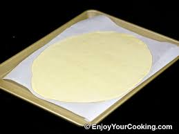
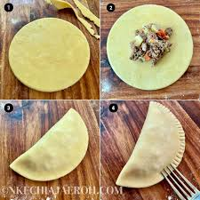

Nigerian fish pies are a popular snack in Nigeria, known for their flacky crust and tasty fish filling. These pies are perfect fo any occasion, whether you're hosting guests or need a satisfying snack. Follow this easy recipe to make your own!
Ingredients
For the Dough
2 cups flour
1/2 tablespoon baking powder
1/4 tablespoon salt
1/4 cup margarine or butter
1/2 cup water
For the Filling
1 can mackerel (or fish of choice)
1 small onion (chopped)
1 small carrot (diced)
1 tablespoon vegetable oil
1 tablespoon curry powder
1 egg (for glazing)
Salt and pepper to taste
Instructions
Making the Dough
In a bowl, mix the flour, salt, and baking powder.
Add margarine and rub into the flour mixture until it looks like breadcrumbs.
Gradually add water to form a soft dough. Set aside.
Preparing the Filling
Heat the oil in a pan and saute the onions until translucent.
Add carrots, fish, curry powder, salt, and pepper. Stir and cook for about 5 minutes, the let it cool.
Assembling the fish pies
Roll out the dough on a floured surface and cut into circles.
Add a spoonful of filling into the center of each circle. Fold in half and seal the edges with a fork.
Glaze with beaten egg and bake at 180 degree celcious for 20-25 minutes or until golden brown.
Gallery


Tips!
For a different flavour, you can substitute Mackerel with Tuna or Sardines.If you prefer a fried version simply deep fry the pies instead of baking them.

Leave a Comment